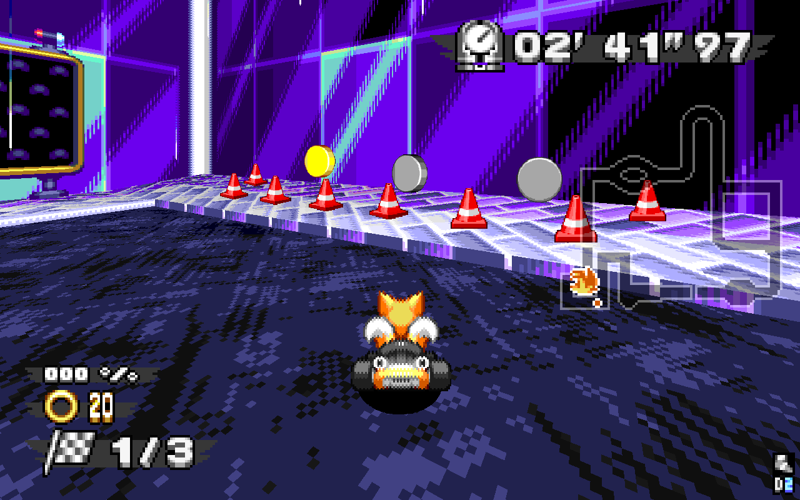

Course Features
Racing is about more than just your vehicle—you’ll need to master the courses to stay on top!
Checkpoints

Checkpoints give out Rings and EXP to anyone who crosses them. The final Checkpoint awards even more!
Higher placements award more EXP, boosting your Grand Prix rank and improving the rewards from your Roulettes. Aim for 1st place throughout the race; if you stay ahead early, you’ll have better chances in the late-game.
Ark Arrows

If you need to get your bearings, keep your eyes up for these floating road signs. They’ll warn you of upcoming turns, traps, and hazards.
Green signs mark slow and simple course elements; yellow and red ones mark sharper turns and tougher traps. Try to look ahead of your Ring Racer, not at it!
Rings

No race course is complete without Rings! Cruise through these fields of gold to recharge your vehicle and keep your boost stocked.
TIP: If you’re already at 20 Rings, don’t waste the ones on the track—hold L to boost through them, and pick them up as you go!
Springs

Springs will bounce you in the direction they’re pointed. Horizontal springs will slide you across the track, while vertical and diagonal springs will pop you into the air.
 After hitting a spring, your tires will briefly lose grip as your vehicle shoots away. Make sure you know where you’re headed before you get there, because you won’t always have a chance to course-correct.
Some springs are placed to help you; a set of springs in front of a long straightaway can help you rocket up to speed. But some springs are technical traps, placed to deflect your racing line and send you careening off the course—and some can be both, depending on your angle of approach. Know your situation!
Color Coded!
Like many things in Ring Racers, the color of a spring will tell you its strength. From weakest to strongest: Gray, Yellow, Red, Blue.
Sneaker Panels

These bright green boosters will improve your top speed and acceleration. Combine them with boost items to send yourself flying!
TIP: Sneaker Panels are like a weaker Sneaker item; you can even use them to Sliptide (see “Advanced Techniques”). However, if you use a Sneaker item and hit a Sneaker Panel afterward, you’ll get a fresh boost with the full power of a Sneaker. Combine boosts together to rocket away!
Dash Rings

Dash Rings are aimed at higher paths, shortcuts, or item capsules. Make contact with the ring, and they’ll fire you towards the prize.
Dash Panels

Dash Panels will fling your Ring Racer in the direction they’re pointing. Unlike Sneaker Panels, they don’t grant you a boost—just raw speed in one specific direction. Make sure you know where you’re headed!
Item Boxes

Race courses are scattered with golden Item Boxes. Drive through one to start the Item Roulette, then tap L to select your weapon of choice!
Players in the back will get fast, destructive items, to help them catch up. Players closer to the front will get items to help them duel, and 1st place can pick from their own special bag of defensive tricks. See the “Items” section for more information on each one.
Roulette Tips
- The Roulette will spin faster and faster as the race goes on, but slows down if you’re stuck in the back. When aiming for a comeback, keep a cool head and choose your options carefully.
- The space behind a row of Item Boxes is the most dangerous location on the track. Keep an eye out: racers will be looking for a fight, and you’re defenseless while spinning the Roulette!
- If you’re already burning Rings when you pick up an Item Box, you can keep holding L to keep burning.
Ring Box

When an Item Box is picked up, it’ll briefly disappear, then reform as a Ring Box, a silver capsule that starts a special Casino Roulette. Instead of weapons, this one will give out a huge Ring payout, and even more if you’re behind. Go for the Jackpot!
Beat the House!
- The Casino Roulette always spins in the same order. BAR is the weakest, and they slowly power up until Jackpot…then roll back around to BAR.
- When a Ring Box is paying out, if you’re already at 20 Rings, you’ll automatically use the extras. As power builds up, you’ll get faster, and your speed lines will change color—blue, then green, then gold!
- If you’re aiming for a Ring Box, don’t follow other racers too closely. If you’re too aggressive, you’ll zip through the hole they leave behind, and miss your chance at a pickup entirely.
Item Capsules

Drive through an Item Capsule to receive the marked item. These are first-come, first-serve, but are usually tucked into out-of-the-way spots; if you don’t give up your racing line for them, someone else will!
Some capsules won’t appear in Free Play or “Attack” modes.
TIP: Item Capsules can contain Rings! If you already have 20, you’ll automatically use any extras.
Tripwire

This cotton-candy colored barrier is used to gate off shortcuts. Look for the telltale blue-and-pink for chances to get ahead!
If you approach a Tripwire normally, you’ll bounce off the barrier and mess up your flow; use an item or build up speed to break through. You’ll often find Ring Boxes, Item Capsules, and other goodies!
TIP: As you speed up, you’ll start to hear the wind, and see the “Subsonic” speed-lines at the front of your Ring Racer. Build up more speed, and you’ll break the barrier in a “Sonic Boom”; as long as you’re wrapped in that cotton-candy aura, you can pass Tripwire even without an item.
Trick Panels

Some courses have special spring panels, marked with a ★ star ★. When you hit these special Trick Panels, they’ll energize you as you fly into the air. On the way up, press any direction + A to Trick. You’ll release the energy in a burst of movement, letting you access new paths and fly over hazards!
Your Tricks won’t go very far if you use them right after bouncing; they’ll go much further when you’re hanging in the air, just before you start falling. Don’t wait too long, or you’ll tumble out of the air and lose your chance.

After performing a trick, your Ring Racer will erupt with blue Voltage, powering up your engine. Your drift sparks, tether, handling, and acceleration will all improve.
If you charge up a blue or rainbow drift boost, you’ll Discharge your Voltage in a powerful burst of speed. Make the most of it before it’s gone!
Tricks (Advanced)
- Landing from a successful trick will restock some Rings and give you an extra boost. These effects get stronger and stronger with better timing.
- Boosting into a Trick Panel will send you sky high! You might find an alternate path or some hidden goodies…
- Depending on the course layout, sometimes a short trick is better than a longer one. Always keep your surroundings in mind!
- Your Voltage will never run out while you’re in the middle of a drift. On the other hand, if you take damage from hazards or items, your Voltage will dissipate right away.
- Fast Fall right after performing a trick for a Voltage Drop. You won’t get Rings or a normal boost, but the impact will release your Voltage instantly, and you’ll rocket away from your landing point!
Wall Transfers
Half-pipes and quarter-pipes launch you high into the air. Think carefully about your entry angle; once you’re airborne, your course is set.

When you reach the top of your arc, you’ll see and hear a sparkle effect. Fastfall with the right timing for an Acid Drop, landing on your wheels with no bounce and a bonus boost!